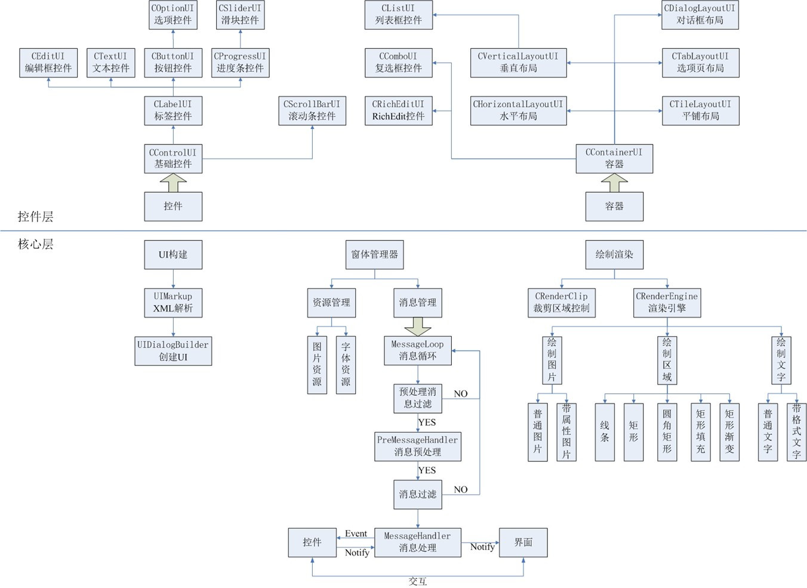
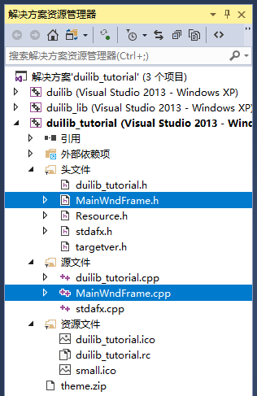
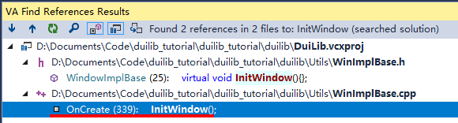
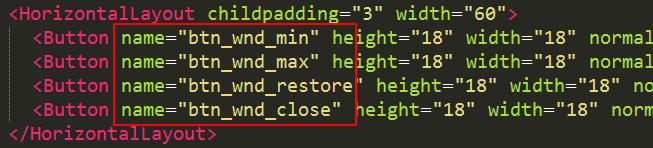
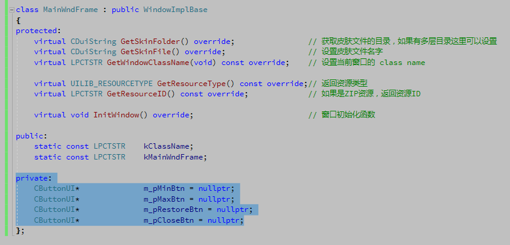
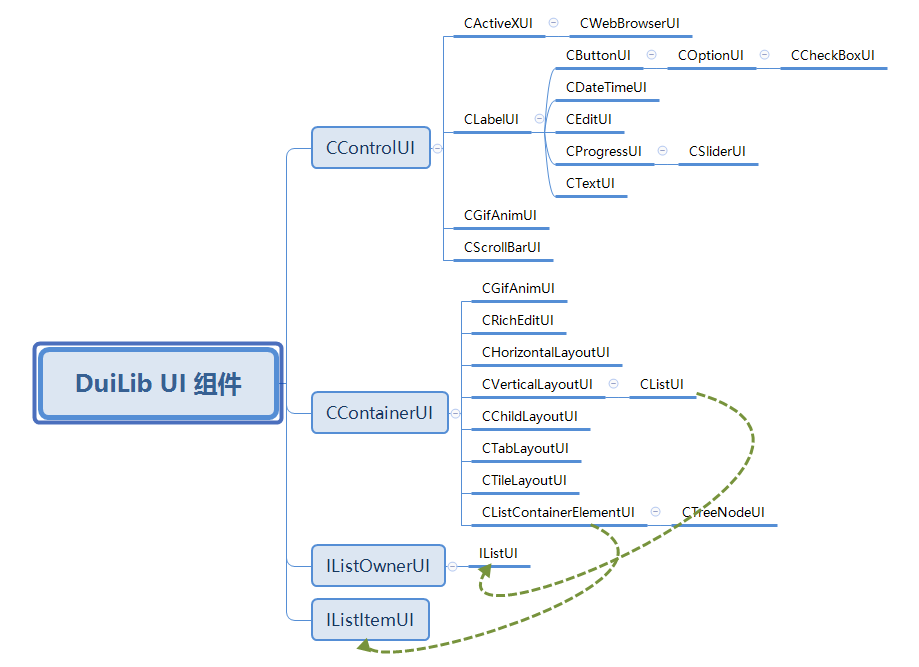

|
duilib自学教程
|
DuiLib 整体的实现不仅仅有控件，还有窗口消息、XML处理等模块，官方曾经过出的一个结构图如下：

图中还是比较详细的描述了 DuiLib 的整体设计，值得注意的部分是 “窗口管理器” 部分（main 函数中的 CPaintManagerUI），它不单承担了一系列窗口资源的管理、窗口的消息的处理，还承担了解析后的 XML 和窗口之间的一个桥梁作用，我们可以通过窗口管理器查找指定名称的控件并把它保存下来转换为指定控件对象，然后调用其对象的相应方法来控制控件的状态。
为了让接下来的代码演示更加容易学习查看，我们还是把写在了一个 cpp 文件的 MainWndFrame 类放到单独的文件中。如下图所示：

移动后要在 duilib_tutorial.cpp 中 include 我们新增的类头文件 MainWndFrame.h，并且在 MainWndFrame.cpp 中要 include 资源文件的头文件 resourse.h，不然 IDR_ZIPRES1 会提示找不到。
接下来，我们实现一个基类 WindowImplBase 提供的 InitWindow 方法，该方法在窗口创建（OnCreate）时被调用，如下所示：

我们可以在这个方法中查找 XML 中我们需要的控件，并把它转换成真正的控件对象，首先我们要给我么需要控制的控件名个名字。通过给控件的 XML 配置增加 name 属性来指定控件的名称。

然后在 MainWndFrame 类中添加几个私有成员变量来准备 “接收” 这几个控件，请注意这里给控件赋初值是使用 C++11 的新特性，老版本的编译器是不支持的，你可以放到构造函数来初始化。

随后在刚才我们覆写的 InitWindow 函数中使用之前我们提到的 窗口管理器 来查找控件，方法如下：
这样我们通过 窗口管理器 m_PaintManager 的 FindControl 方法，借助控件名称找到了控件，FindControl 方法返回的是一个 CControlUI* 类型，通过类型转换到指定的控件类型，我们就拿到了这个控件的操作权。m_PaintManager 是在基类 WindowImplBase 中初始化和赋值的，有兴趣的可以跟进去看一下。一个基本的控件从创建到转换为可控的成员变量过程就是这样完成的，我们看到了 DuiLib 提供了很多丰富的控件类型，但是最上面图中介绍的控件已经不全了，毕竟是很久以前的图片了，我们不能以这个为标准，一定要自己去翻翻代码。以下是我仅整理的控件相关的结构图，把目前 DuiLib 所有包含的控件都列举出来了，分支关系代表继承关系，箭头代表了多继承的父类之间的关系。

从图中可以看出，布局类（或者说容器类）的 UI 组件都是继承与 CContainerUI，控件类的 UI 组件都是继承与 CControlUI。这也就是为什么上面类型转换可以转换为指定控件类型的原因了。大家目前只需要谨记这一点就足够我们应付绝大部分问题了。上面的代码仅仅是把 XML 中的控件转化成了可控的控件成员变量。更多情况下我们是通过用户操作窗口的事件来操作控件，接下来我们就来介绍，如果响应用户操作窗口的消息和事件，顺带着就把如何操作控件的状态就一并介绍了。
1.8.18